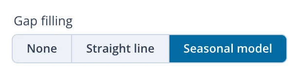
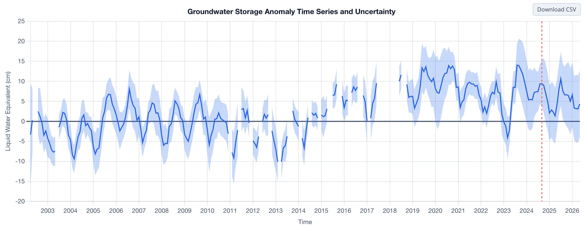
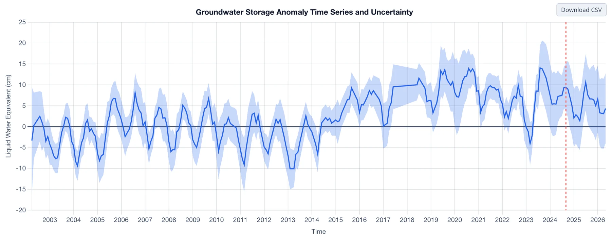
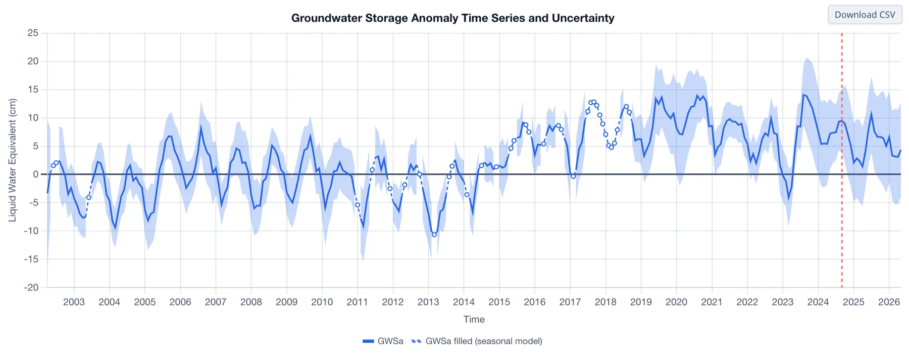

Lacunes dans les Données
Mois manquants
Il manque 35 mois dans les données GRACE : des mois isolés, surtout entre 2011 et 2017, et les 11 mois entre la fin de GRACE et le début de GRACE-FO (voir La Mission GRACE). TWSa et GWSa présentent des lacunes pour ces mois. Les couches GLDAS (SMa, SWEa et CANa) proviennent de modèles de surface terrestre exécutés chaque mois ; elles n'ont donc pas de lacunes.
L'analyse des tendances dans l'application ignore les mois manquants. Les analyses qui travaillent année par année ont besoin d'une valeur pour chaque mois. Dans l'Analyse de la Recharge, par exemple, un mois manquant au moment d'un pic ou d'un creux saisonnier modifie le résultat de l'année. L'application estime les mois manquants à l'aide d'un modèle saisonnier, selon l'approche de Barbosa et al. (2022). Cette page présente les options de l'application, et Le Modèle Saisonnier décrit la méthode : le modèle, son ajustement, le calcul des valeurs comblées et leur précision.
Le contrôle Gap filling
Le contrôle Gap filling (comblement des lacunes) du panneau définit ce que fait le graphique aux mois manquants :

- None interrompt la courbe à chaque lacune, ce qui permet de voir exactement quels mois ont été observés.
- Straight line relie les mois de part et d'autre de chaque lacune. Cette option ne fait que franchir la lacune sur le graphique et n'estime rien.
- Seasonal model estime chaque mois manquant à partir d'une tendance et d'un cycle saisonnier ajustés sur les mois observés. Les mois comblés sont tracés en tirets avec des marqueurs vides, et le survol de l'un d'eux affiche sa valeur. Cette option ajoute aussi le bouton Recharge Analysis au-dessus du graphique (voir Ouverture de l'Analyse).
Le Northern Midwest Aquifer System, dont le cycle saisonnier est marqué, montre la différence entre les trois options. Avec None :

Avec Straight line, les 11 mois entre les missions deviennent un pont plat :

Avec Seasonal model, les mois comblés prolongent le cycle annuel de la région :

La bande d'incertitude n'est pas tracée pour les mois comblés, car l'erreur d'une valeur comblée provient du modèle et non de GRACE (voir Précision du comblement).
Valeurs comblées dans le CSV
Le CSV téléchargé contient toujours les valeurs comblées, dans les colonnes GWSa_filled et TWSa_filled, avec GWSa_is_filled et
TWSa_is_filled qui signalent les mois comblés, quelle que soit l'option choisie pour le graphique (voir Téléchargement des Données).
Référence
Barbosa, S. A., Pulla, S. T., Williams, G. P., Jones, N. L., Mamane, B., and Sanchez, J. L. (2022). Evaluating groundwater storage change and recharge using GRACE data: A case study of aquifers in Niger, West Africa. Remote Sensing, 14(7), 1532. doi:10.3390/rs14071532